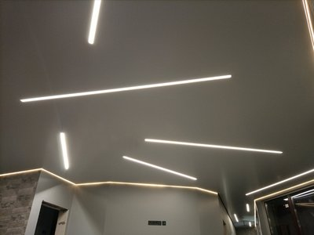
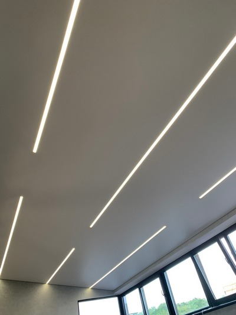
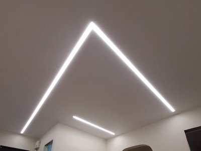
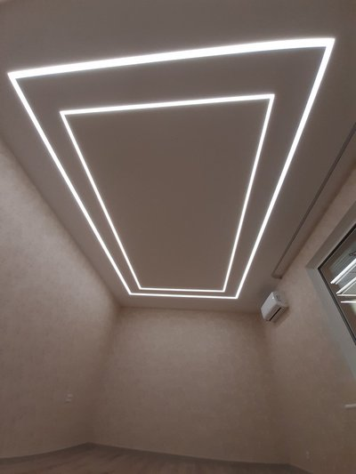

Световые линии в натяжных потолках

Натяжной потолок «световые линии» имеет еще названия – «Парящие линии» или «Световые линии». Можно сказать, что он является более обобщенным вариантом парящего натяжного потолка. В последнем светодиодная лента располагалась строго по периметру помещения. В «Световых линиях» она может быть в любом месте.
Конструкция натяжного потолка «Световые линии»
Для создания такой конструкции могут быть использованы несколько вариантов багетов (профилей). Все они крепятся на базовом потолке. Есть несколько способов крепления:
- При помощи регулируемого подвеса – специалисты нашей компании Nova Stelya его не используют, так как он не создает достаточной жесткости для конструкции.
- При помощи перфорированных уголков – оптимальный вариант, сочетающий простоту монтажа и достаточную жесткость.
- При помощи деревянного бруса – способ обеспечивает максимальную жесткость конструкции, но подходит лишь для вариантов, где натяжное полотно опускается на 5-6 см от базового потолка. Перед монтажом брус необходимо обработать жидкостью, защищающей его от влаги. В противном случае его может повести.

После монтажа на потолке профилей, к ним подводятся провода для подключения светодиодной ленты, а также устанавливаются блоки питания и блоки управления (в случае RGB ленты). Установив в специальный для нее паз в профиле, светодиодную ленту с внешней стороны необходимо закрыть, чтобы свет от нее получился рассеянным. В противном случае не будет наблюдаться эффекта парения. А будет просто натяжной потолок, в котором установлены для освещения светодиодные ленты.
Паз может быть закрыт двумя способами:
- специальной полупрозрачной вставкой (заглушкой);
- непосредственно самим полотном.
Первый вариант наиболее универсален и подходит для любого натяжного полотна – тканевого и пленочного. К тому же при необходимости замены светодиодной ленты, это довольно легко сделать, сняв заглушку. Но в дневное время суток эта вставка будет видна в виде полоски на потолке. Во втором варианте днем натяжной потолок ничем не отличается от обычного. Но его нельзя использовать для тканевых полотен, а также пленочных полотен темных тонов. Также возникнут большие сложности при ремонте.
Рассмотрим теперь профили, которые используются для создания «Световых линий».
Профиль ПК 9
Он имеет ширину 5 см. Его конструкция такова, что паз закрывается самим натяжным полотном. Профиль довольно жесткий, поэтому создание сложных криволинейных линий затруднен.
Профили Flexy
Для создания «Световых парящих линий» этот бренд предлагает два вида профиля – ПФ 3645 и ПФ 6838.
Профиль ПФ 3645
Имеет ширину 40 мм. Паз закрывается полупрозрачной заглушкой, шириной 14 мм.
Профиль ПФ 6838
Имеет ширину 40 мм. Паз закрывается полупрозрачной заглушкой, шириной 30 мм. В этом профиле можно установить одну или две светодиодных ленты.
Обычно с помощью профилей Flexy потолок световыми линиями делят на сектора (то есть линия идет от стены до стены) или создают замкнутые прямоугольные конструкции. Но качественно сделать просто световой отрезок, который не доходит до стен довольно проблематично.
Универсальный профиль Apply
Не путать с другими профилями Apply – Apply 0, Apply 8, Apply 20, Apply 40. Наиболее универсальный профиль. Его высота 67 мм. Паз закрывается полупрозрачной заглушкой. С его помощью можно создавать:
- парящий потолок;
- световые линии;
- парящий светильник;
- ниши для штор в натяжных потолках.
Преимущества:
- универсальность;
- позволяет использовать мощные светодиодные ленты до 28 Вт/м;
- стыкуется с другими моделями профилей;
- можно регулировать ширину световой линии – максимальная ширина 10 см, при использовании пластиковой вставки - до 20 см.
Недостатки:
- большая потеря высоты помещения;
- для создания световой линии необходимо использовать два профиля.
Все перечисленные профили выполнены из алюминиевого сплава и подразумевают только гарпунный способ фиксации натяжного полотна. В отличие от парящего натяжного потолка в «Световых линиях» мы рекомендуем использовать более яркие светодиодную ленты – от 14,4 Вт/м.

Преимущества натяжного потолка «Световые линии»
- Великолепный внешний вид. «Световые линии» входят в тройку наиболее предпочтительных вариантов для жителей Киева и области.
- Можно эффектно зонировать пространство помещения, выделяя в нем зону отдыха, приема пищи и т.д. Особенно это актуально для квартир-студий.
- Подходит для любых стилей интерьера и для любых видов натяжных потолков – многоуровневых, парящих и т.д.
Преимущества компании Nova Stelya

Мы более 10 лет устанавливаем натяжные потолки в Киеве и области. Это тысячи самых разнообразных проектов, в том числе и «Световые линии». Прежде всего, мы гарантируем высокое качество работ:
- используем только сертифицированные натяжные потолки известных брендов;
- используем качественные светодиодные ленты, в которых блоки питания через некоторое время не взрываются фейерверками, как дешевая китайская продукция;
- все электрические соединения выполняем только пайкой или опрессовкой, никаких скруток;
- при длине светодиодной ленты свыше 5 м мы ее подключаем с двух сторон, это гарантирует, что все светодиоды будут светить одинаково и не появится неприятный эффект, что один конец ленты светит ярче другого.
Помимо высокого качества работ своим клиентам Nova Stelya гарантирует:
- огромное разнообразие натяжных потолков известных брендов по цвету и фактуре;
- оперативное выполнение работ;
- конкурентные цены.
Ответы на наиболее часто задаваемые вопросы по натяжным потолкам «Световые линии
🤗 Можно ли сделать натяжной потолок с криволинейными световыми линиями?
Можно. Для этого на профилях, в которые вставляется светодиодная лента, делаются надпилы, и они выгибаются в нужный контур. Но это значительно более трудоемкая работа, поэтому и стоит она дороже.
🤗 Можно ли сделать тканевый натяжной потолок «Световые линии»?
Да, но необходимо использовать профили с полупрозрачной вставкой (заглушкой).
🤗 Можно ли отказаться от люстры в натяжном потолке «Световые линии»?
Да, при установке достаточно мощной светодиодной ленты вы получите качественное равномерное освещение помещения и люстра вам не понадобиться. Наши специалисты могут выполнить расчет для подбора светодиодной ленты нужной мощности и длины.
🤗 При заливе сверху, может ли пострадать освещение в натяжном потолке «Световые линии»?
Если выполнен качественный монтаж (нет соединений на скрутках, провода надежно изолированы, блок питания установлен не на базовом потолке), то с большой вероятностью с освещением ничего не случиться. В случае затопления обращайтесь к нам, и наши специалисты профессионально устранят вся его последствия.
🤗 Какова цена натяжного потолка «Световые линии»?
Однозначного ответа нет. Все зависит от применяемого натяжного полотна – тканевое, пленочное, бюджетного или премиум класса, используемой светодиодной ленты, ее длины и конфигурации на потолке, используемых профилей. Например, для помещения площадью 15 м2, где использовалось ПВХ полотно MSD Premium, монохромная светодиодная лента с простой конфигурацией (прямые линии) и профили Flexy, цена составила примерно 10 000 грн. Для такого же по площади помещения, в котором использовалось ПВХ полотно Pongs, RGB лента со сложной конфигурацией и те же профили Flexy, цена составила 19000 грн.
Звоните Прямо Сейчас
Или oставьте заявку и наши менеджеры свяжутся с Вами
Бесплатная консультация
Оставьте номер телефона и мы Вам перезвоним